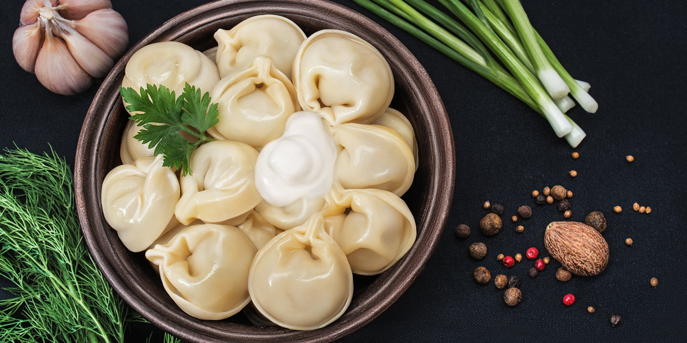

Легенда о первом пельмене: "Наша история началась с легендарного первого пельменя, созданного старинным рецептом, который подарил нам вдохновение для создания Pelmerin. С тех пор мы страстно следуем традициям и качеству, чтобы каждый наш пельмень приносил радость и удовольствие." Путешествие по вкусам: "Pelmerin – это путешествие по разным кухням мира через вкуснейшие пельмени. Мы объединяем лучшие рецепты из разных культур, чтобы каждый у кусок нашего продукта переносил вас в удивительный мир вкусов и ароматов." Семейная традиция: "Семейные тайны и рецепты пельменей передаются из поколения в поколение в нашей компании. Мы гордимся нашей историей, и каждый пельмень, который мы создаем, несет в себе душу и тепло нашей семьи." Источник вдохновения: "Pelmerin – это не просто еда, это источник вдохновения для нашей команды. Мы стремимся к совершенству в каждом пельмени, чтобы каждый клиент мог насладиться неповторимым вкусом и качеством, которые мы так ценим." Дружба и общность: "Наши пельмени не просто еда, они связывают людей вместе. Мы верим в силу дружбы и общности, которые можно создать за обедом или ужином с друзьями и семьей, делясь нашими вкусными и ароматными пельменями Pelmerin."